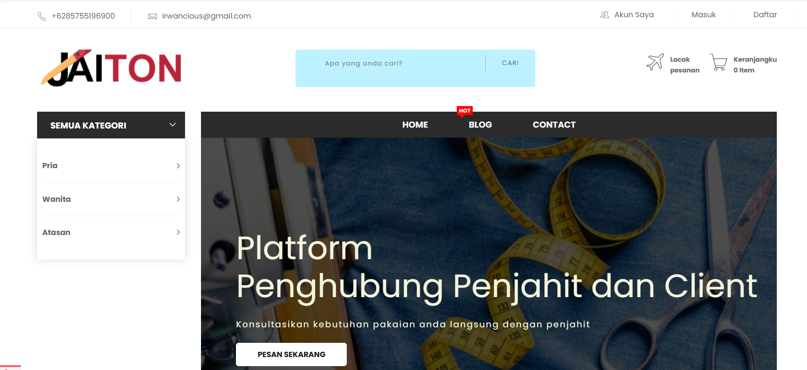
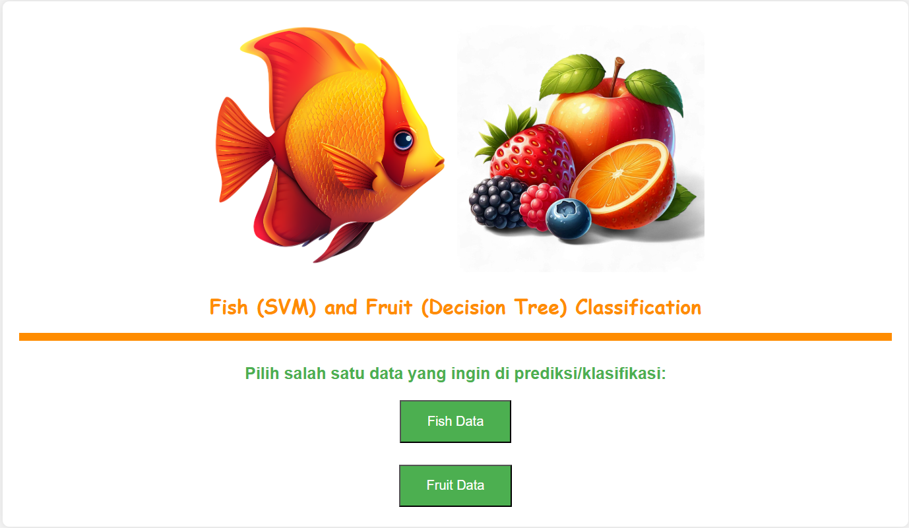
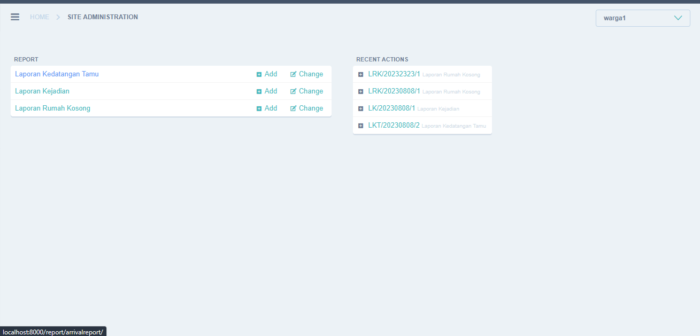

About Me
A brief introduction about myself
|
| Full Name: Irwan April Liansah |
Education: Universitas Nusantara PGRI Kediri |
Pekerjaan: Mahasiswa |
| Contact: 085755196900 |
Hobi: Membaca, Coding |
Alamat: Kediri, Jawa Timur, Indonesia |
Portofolio |

Website Toko Online
Develop website e-commerce berbasis Laravel.
|

Website Klasifikasi Jenis Ikan & Buah
Membangun website untuk memprediksi jenis ikan dan buah berdasarkan data yang diinput (berbasis python).
|

Sistem Pengaduan
Pengembangan sistem pengaduan untuk perumahan di kota Kediri berbasis web.
|
|